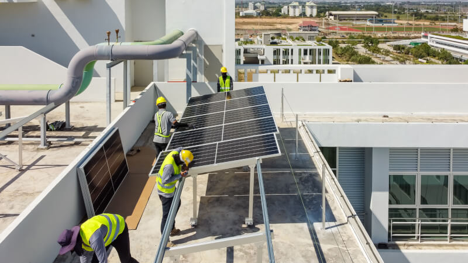

Materiales ecológicos


Es un pilar fundamental para el desarrollo de nuestras ciudades y comunidades.
Este enfoque busca no solo crear espacios funcionales y estéticamente agradables, sino también respetar y proteger el medio ambiente.
Así, vemos la importancia de integrar técnicas de construcción no intrusivas con el entorno, que utilicen materiales sustentables.
Esto implica el uso de recursos locales renovables (como maderas certificadas, cañas o fibras vegetales) que reduzcan la huella de carbono de la construcción y promuevan la economía local, a la vez que generen pocos residuos, priorizando la reutilización y el reciclaje.
Eficiencia energética
La eficiencia energética es un aspecto clave en la arquitectura sostenible.
Se busca reducir al máximo el consumo de energía en los edificios a través de medidas como un buen aislamiento térmico, la instalación de sistemas de iluminación LED y el uso de electrodomésticos y equipos eficientes.
Diseño Responsable

Las acciones necesarias para reducir la huella de carbono en las edificaciones deben considerar su ciclo de vida completo, incluyendo la extracción y producción de materiales, las obras de construcción en sí mismas, la usabilidad y el mantenimiento, y la disposición final de sus materiales en caso de demolición.
- Iluminación natural
- Ventilación natural
- Aislamiento térmico de alto rendimiento
- Chimeneas solares
- Estrategias de sombreado natural
- Muros trombe y muros de agua